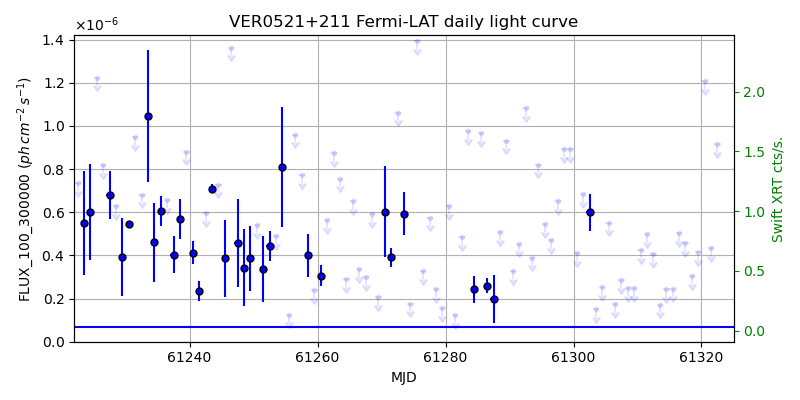
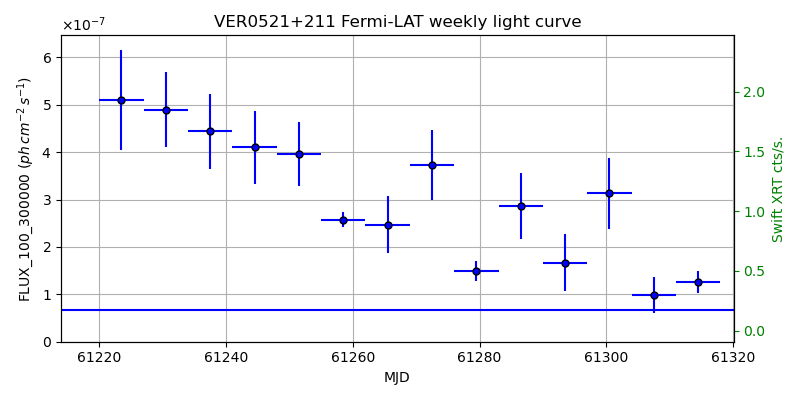
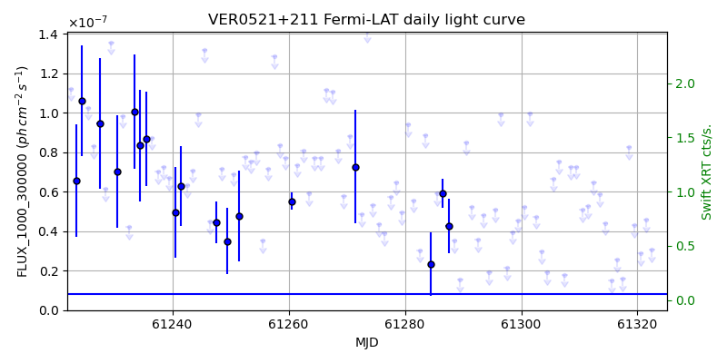
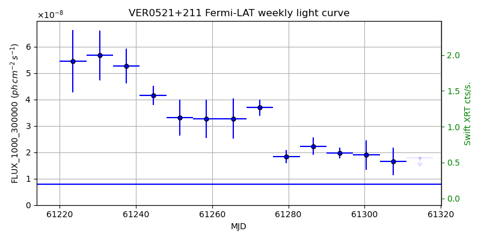

LAT Lightcurve site: https://fermi.gsfc.nasa.gov/ssc/data/access/lat/msl_lc/source/VER_0521p211
Swift site: https://www.swift.psu.edu/monitoring/source.php?source=VERJ0521+212
NED: Query
Time of last update of this page: UT: 2026-10-10 15:16 (MJD: 61323.636)
| Property | Value |
|---|---|
| R.A. | 5:21:46.08 |
| Dec. | 21:12:50.4 |
| z | 0.108 |
| 3FGL SpectrumType | PowerLaw |
| 3FGL PL Index | 1.92 |
| 3FGL Flux_100_300000 | 6.73e-08 1 / (s cm2) |
| 3FGL Flux_1000_300000 | 8.00e-09 1 / (s cm2) |
| 3FGL Flux >200 GeV | 5.96e-11 1 / (s cm2) |
| 3FGL Extrap. Crab >200 GeV | 0.25 |
| 3FGL Flux After EBL Absorption >200GeV | 3.54e-11 1 / (s cm2) |
| 3FGL EBL Crab Fraction >200GeV | 0.15 |

| MJD | dMJD | Flux | dFlux | Frac3FGL | FracCrab>200GeV | EBLFracCrab>200GeV |
|---|---|---|---|---|---|---|
| 61318.50 | 0.50 | 3.03e-07 | 0.00e+00 | 0.00 | 0.00 | 0.00 |
| 61319.50 | 0.50 | 4.15e-07 | 0.00e+00 | 0.00 | 0.00 | 0.00 |
| 61320.50 | 0.50 | 1.21e-06 | 0.00e+00 | 0.00 | 0.00 | 0.00 |
| 61321.50 | 0.50 | 4.35e-07 | 0.00e+00 | 0.00 | 0.00 | 0.00 |
| 61322.50 | 0.50 | 9.14e-07 | 0.00e+00 | 0.00 | 0.00 | 0.00 |

| MJD | dMJD | Flux | dFlux | Frac3FGL | FracCrab>200GeV | EBLFracCrab>200GeV |
|---|---|---|---|---|---|---|
| 61286.50 | 3.50 | 2.86e-07 | 6.97e-08 | 4.25 | 1.08 | 0.64 |
| 61293.50 | 3.50 | 1.67e-07 | 5.97e-08 | 2.48 | 0.63 | 0.37 |
| 61300.50 | 3.50 | 3.13e-07 | 7.51e-08 | 4.65 | 1.19 | 0.71 |
| 61307.50 | 3.50 | 9.83e-08 | 3.87e-08 | 1.46 | 0.37 | 0.22 |
| 61314.50 | 3.50 | 1.26e-07 | 2.38e-08 | 1.88 | 0.48 | 0.28 |

| MJD | dMJD | Flux | dFlux | Frac3FGL | FracCrab>200GeV | EBLFracCrab>200GeV |
|---|---|---|---|---|---|---|
| 61318.50 | 0.50 | 8.26e-08 | 0.00e+00 | 0.00 | 0.00 | 0.00 |
| 61319.50 | 0.50 | 4.31e-08 | 0.00e+00 | 0.00 | 0.00 | 0.00 |
| 61320.50 | 0.50 | 2.87e-08 | 0.00e+00 | 0.00 | 0.00 | 0.00 |
| 61321.50 | 0.50 | 4.58e-08 | 0.00e+00 | 0.00 | 0.00 | 0.00 |
| 61322.50 | 0.50 | 3.07e-08 | 0.00e+00 | 0.00 | 0.00 | 0.00 |

| MJD | dMJD | Flux | dFlux | Frac3FGL | FracCrab>200GeV | EBLFracCrab>200GeV |
|---|---|---|---|---|---|---|
| 61286.50 | 3.50 | 2.22e-08 | 3.25e-09 | 2.78 | 0.71 | 0.42 |
| 61293.50 | 3.50 | 1.97e-08 | 2.02e-09 | 2.46 | 0.63 | 0.37 |
| 61300.50 | 3.50 | 1.90e-08 | 5.57e-09 | 2.38 | 0.61 | 0.36 |
| 61307.50 | 3.50 | 1.65e-08 | 5.25e-09 | 2.06 | 0.52 | 0.31 |
| 61314.50 | 3.50 | 1.78e-08 | 0.00e+00 | 0.00 | 0.00 | 0.00 |
--------------------------------------------------------- Using user-supplied coords: 5:21:46.08 21:12:50.4 2000 --------------------------------------------------------- FLWO UT night of: 2026-10-11 Local Sid. @ Midnight: 00:55 Sunset (-15.0) (local, UT): 19:04 02:04 Sunrise (-15.0) (local, UT): 05:18 12:18 Moonrise (local, UT): Moonset (local, UT): Moon phase: 0.01 --------------------------------------------------------- AzTime LSID UT Obj_el Obj_az Mn_el Mn_az Sep. --------------------------------------------------------- 19:04 19:58 02:04 -25.3 40.3 -16.1 264.2 120.5 19:34 20:29 02:34 -20.9 46.3 -22.3 267.8 120.8 20:04 20:59 03:04 -16.1 51.6 -28.5 271.5 121.1 20:34 21:29 03:34 -10.9 56.5 -34.7 275.4 121.4 21:04 21:59 04:04 -5.1 60.9 -40.8 279.7 121.7 21:34 22:29 04:34 0.7 65.0 -46.8 284.6 122.1 22:04 22:59 05:04 6.3 68.8 -52.7 290.5 122.4 22:34 23:29 05:34 12.3 72.4 -58.4 297.7 122.7 23:04 23:59 06:04 18.4 75.9 -63.6 307.3 123.1 23:34 00:29 06:34 24.7 79.3 -68.1 320.3 123.4 00:04 00:59 07:04 31.0 82.7 -71.3 338.2 123.8 00:34 01:29 07:34 37.3 86.3 -72.6 0.4 124.1 01:04 01:59 08:04 43.7 90.0 -71.5 22.7 124.5 01:34 02:30 08:34 50.1 94.3 -68.3 40.8 124.9 02:04 03:00 09:04 56.5 99.2 -63.9 54.1 125.2 02:34 03:30 09:34 62.7 105.5 -58.7 63.8 125.6 03:04 04:00 10:04 68.7 114.3 -53.1 71.2 125.9 03:34 04:30 10:34 74.2 128.2 -47.3 77.2 126.3 04:04 05:00 11:04 78.4 152.5 -41.4 82.2 126.6 04:34 05:30 11:34 79.4 189.1 -35.3 86.6 126.9 05:04 06:00 12:04 76.7 220.8 -29.2 90.6 127.2 05:18 06:14 12:18 74.6 230.4 -26.5 92.4 127.4 --------------------------------------------------------- Dark hours >55 deg.: 3.34 srcstart (UT): 2026-10-11 08:57 srcend (UT): 2026-10-11 12:17